Collective Live Photos
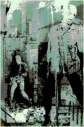

Exxon protest gig, 6th Avenue, New York, NY. First picture, composite of Martin and Rob, found in TheI. Second picture, shot from the crowd area (l-r Rob, Bones, Martin, Pete)
{kind=link}
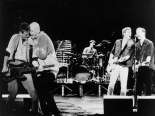
Blue Sky Mining tour (post 1990). (l-r Bones, Pete, Rob, Martin, Jim)
{kind=link}
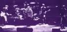
Scan from liner notes of Scream In Blue - Live.
{kind=link}
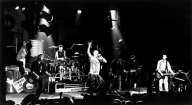
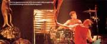
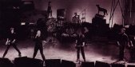
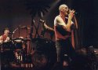
Diesel and Dust tour: -
First picture, originally found on official web-site (l-r Martin, Rob, Pete, Peter Gifford, Jim).
Second picture, Q magazine (issue 57). (l-r Rob, Pete).
Third picture, unknown source. (l-r Martin, Pete, Rob, Bones, Jim)
Fourth picture, unknown source. (l-r Rob, Pete)
{kind=link}
{kind=link}
{kind=link}
{kind=link}
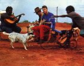
Recording of the In The Valley video. Unknown source. (l-r Jim, Martin)
{kind=link}
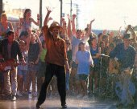
Recording of the Blue Sky Mine video. Unknow source. (l-r Martin, Pete, Jim)
{kind=link}
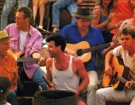
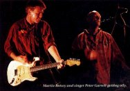
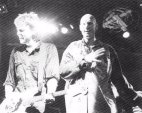
Unknown sources.
First picture (l-r Pete, Bones, Rob, Jim, Martin.)
Second picture (l-r Martin, Pete)
Third picture (l-r Martin, Pete)
{kind=link}
{kind=link}
{kind=link}